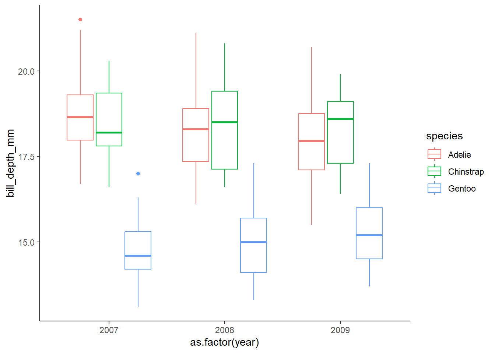
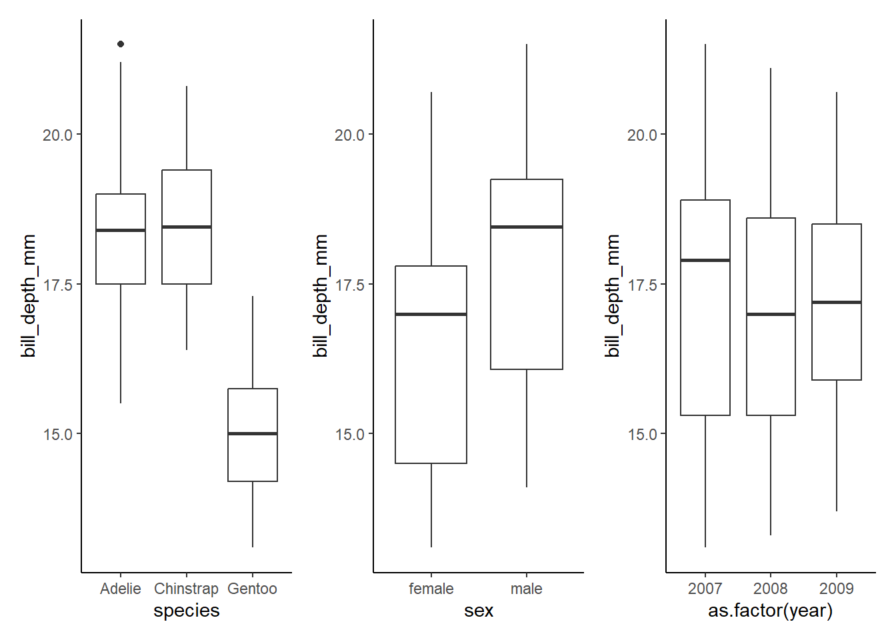
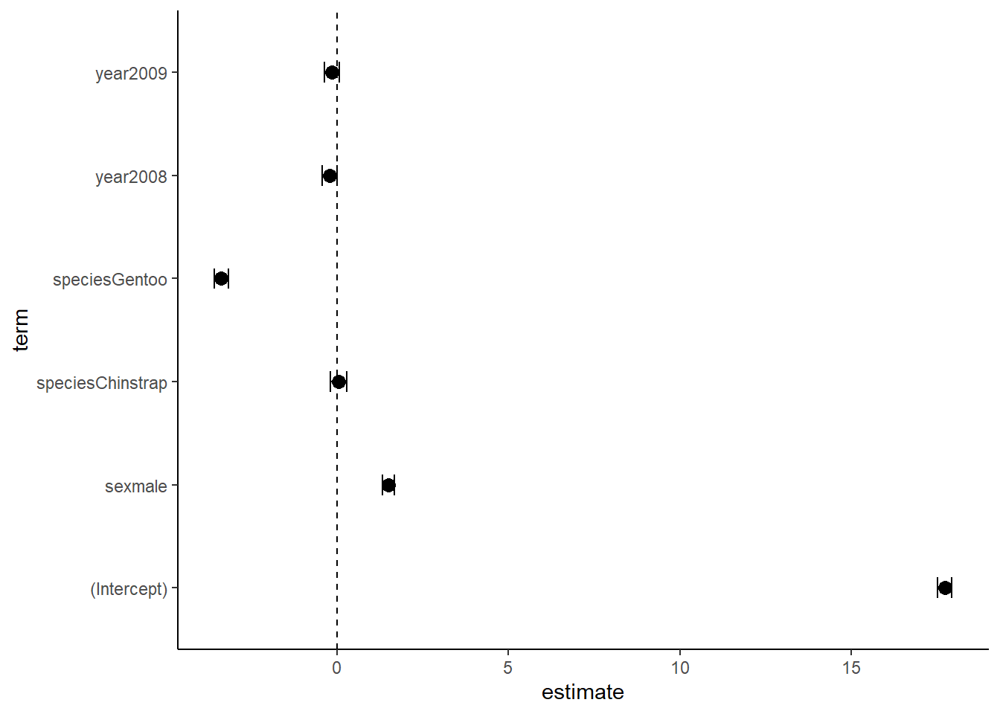
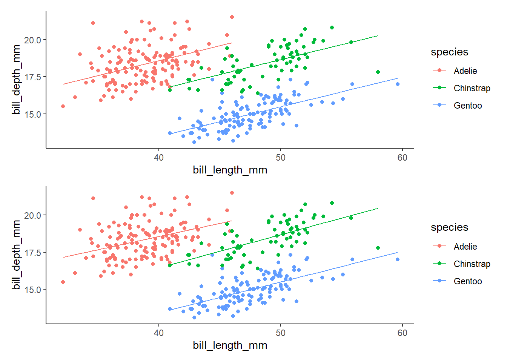
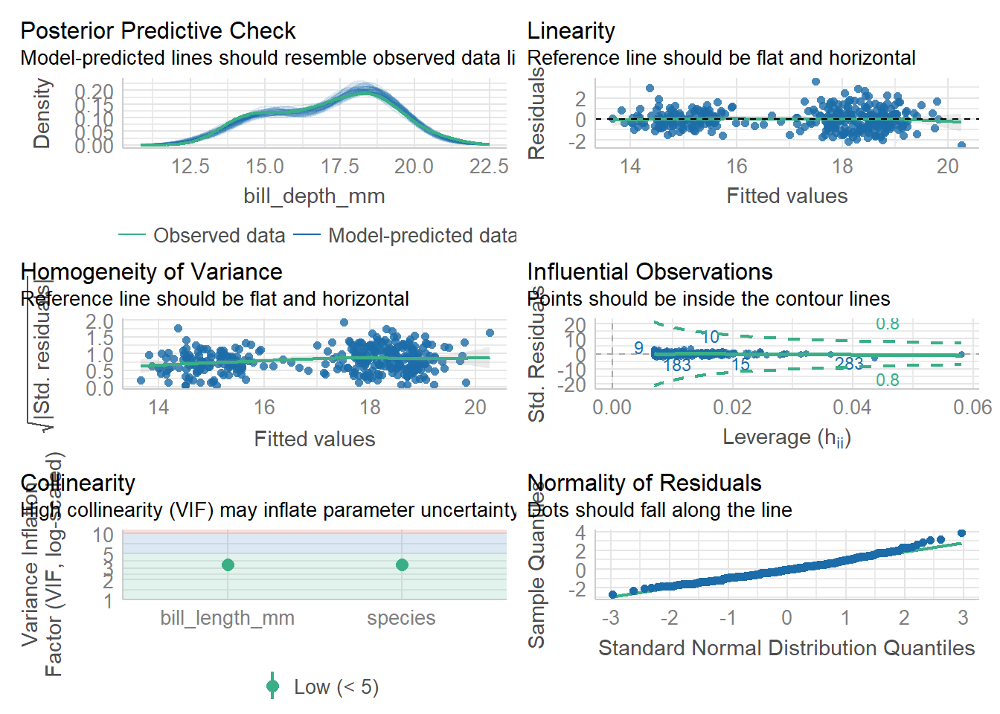
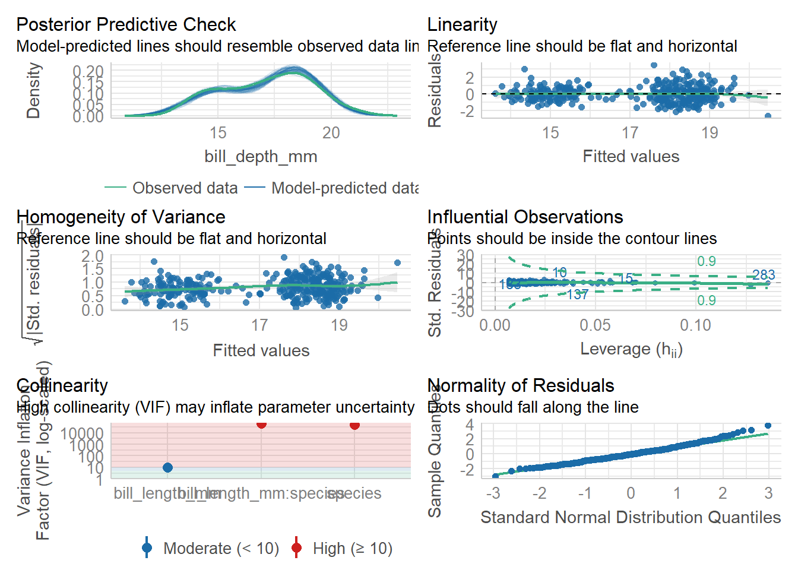
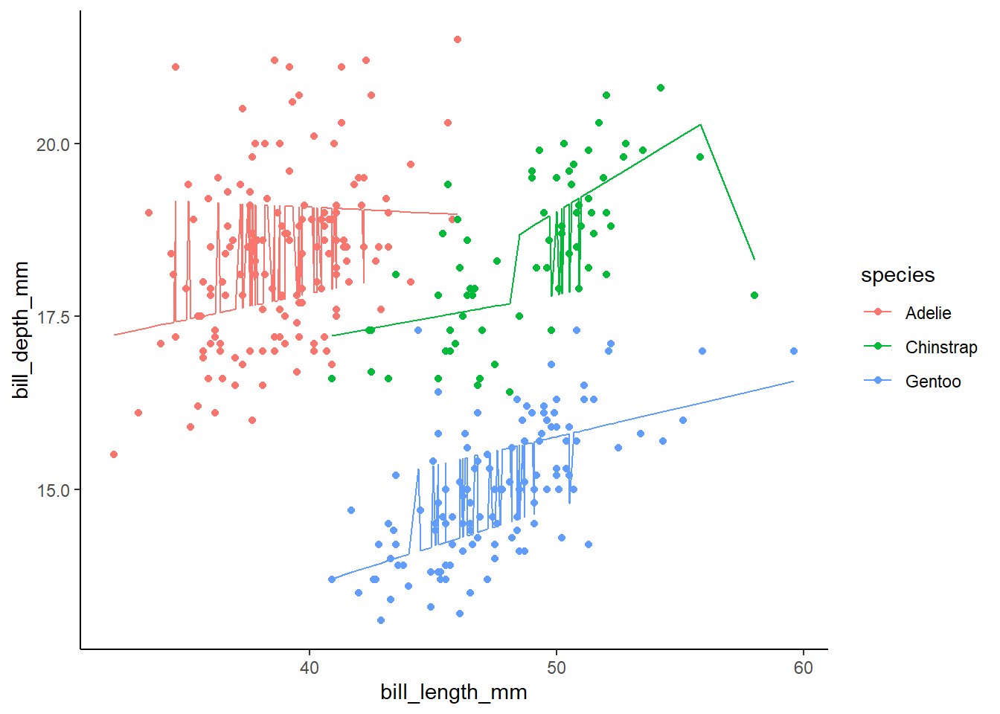
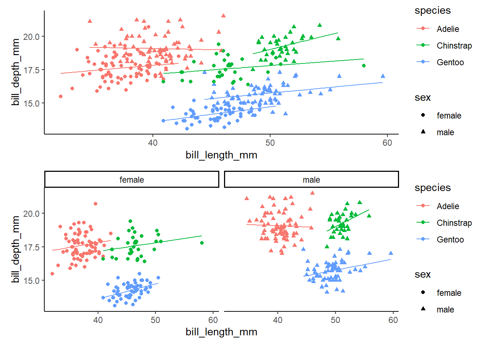
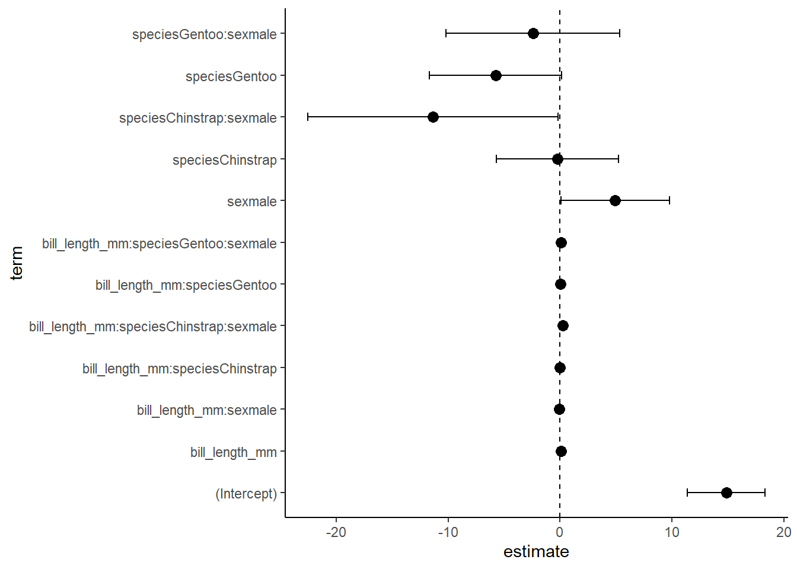
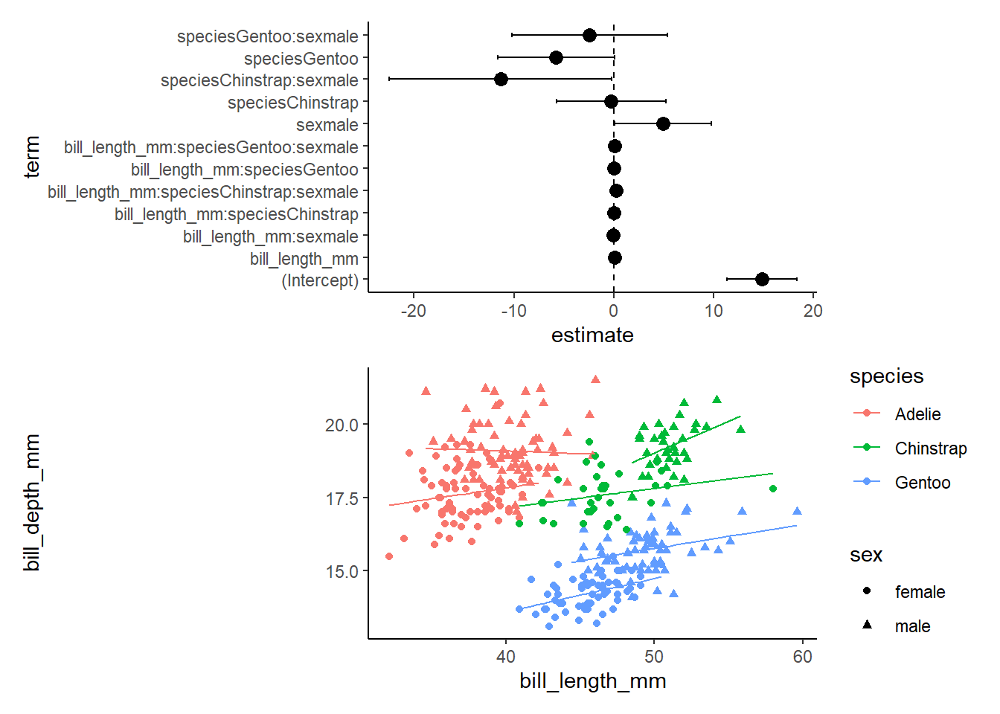

library(tidyverse)
library(broom)
library(palmerpenguins)
library(data.table)
library(performance)
library(patchwork)
library(car) #to check collinearityMultiple Regression & Model Selection
Multiple Regression and Model Selection
Load packages
My favorite mixed models selection tutorial: Our Coding Club
Get our penguin data ready!
penguins <- palmerpenguins::penguins
head(penguins)# A tibble: 6 × 8
species island bill_length_mm bill_depth_mm flipper_length_mm body_mass_g
<fct> <fct> <dbl> <dbl> <int> <int>
1 Adelie Torgersen 39.1 18.7 181 3750
2 Adelie Torgersen 39.5 17.4 186 3800
3 Adelie Torgersen 40.3 18 195 3250
4 Adelie Torgersen NA NA NA NA
5 Adelie Torgersen 36.7 19.3 193 3450
6 Adelie Torgersen 39.3 20.6 190 3650
# ℹ 2 more variables: sex <fct>, year <int>penguins<-drop_na(penguins)
penguins$year=as.factor(penguins$year) #we are interested in year as a grouping/categorical variable so we will make it a factorWhat is the effect of year on bill depth by species?
We will start with a boxplot for a quick check. We would eventually want to calculate means and error bars for the final visualization though! Note that the graph below is a good way to view the interaction of our explanatory variables, which is not what we modeled… We only consider the additive effects (each variable on its own)
# effect of year on bill depth by species
ggplot(data=penguins, aes(x=as.factor(year), y=bill_depth_mm, color=species))+
geom_boxplot()+
theme_classic()
Visualization of each variable on its own:
speciesgraph<-ggplot(data=penguins, aes(x=species, y=bill_depth_mm))+
geom_boxplot()+
theme_classic()
sexgraph<-ggplot(data=penguins, aes(x=sex, y=bill_depth_mm))+
geom_boxplot()+
theme_classic()
yeargraph<-ggplot(data=penguins, aes(x=as.factor(year), y=bill_depth_mm))+
geom_boxplot()+
theme_classic()
speciesgraph+sexgraph+yeargraph
#build the model
lm1<- lm(bill_depth_mm ~ species+sex+year, data=penguins)summary(lm1) #check R2 and p-value! How well does the model fit?
Call:
lm(formula = bill_depth_mm ~ species + sex + year, data = penguins)
Residuals:
Min 1Q Median 3Q Max
-2.07890 -0.56431 -0.00782 0.48485 3.12581
Coefficients:
Estimate Std. Error t value Pr(>|t|)
(Intercept) 17.71835 0.10760 164.672 <2e-16 ***
speciesChinstrap 0.05649 0.12232 0.462 0.6445
speciesGentoo -3.36375 0.10268 -32.760 <2e-16 ***
sexmale 1.50471 0.09107 16.523 <2e-16 ***
year2008 -0.21053 0.11374 -1.851 0.0651 .
year2009 -0.14416 0.11239 -1.283 0.2005
---
Signif. codes: 0 '***' 0.001 '**' 0.01 '*' 0.05 '.' 0.1 ' ' 1
Residual standard error: 0.8308 on 327 degrees of freedom
Multiple R-squared: 0.8247, Adjusted R-squared: 0.822
F-statistic: 307.6 on 5 and 327 DF, p-value: < 2.2e-16summary(lm1)$coefficient #just the coef table from the summary! Estimate Std. Error t value Pr(>|t|)
(Intercept) 17.71835149 0.10759801 164.6717403 1.229960e-316
speciesChinstrap 0.05649237 0.12231501 0.4618597 6.444891e-01
speciesGentoo -3.36375169 0.10267709 -32.7604888 2.664705e-105
sexmale 1.50470770 0.09106922 16.5226813 5.184519e-45
year2008 -0.21053181 0.11373677 -1.8510443 6.506474e-02
year2009 -0.14416134 0.11238907 -1.2826989 2.005060e-01anova(lm1) # an ANOVA table of our lmAnalysis of Variance Table
Response: bill_depth_mm
Df Sum Sq Mean Sq F value Pr(>F)
species 2 870.79 435.39 630.7435 <2e-16 ***
sex 1 188.50 188.50 273.0716 <2e-16 ***
year 2 2.45 1.23 1.7771 0.1708
Residuals 327 225.72 0.69
---
Signif. codes: 0 '***' 0.001 '**' 0.01 '*' 0.05 '.' 0.1 ' ' 1confint(lm1) #CIs for our model predictors! 2.5 % 97.5 %
(Intercept) 17.5066798 17.93002315
speciesChinstrap -0.1841312 0.29711599
speciesGentoo -3.5657427 -3.16176068
sexmale 1.3255522 1.68386318
year2008 -0.4342799 0.01321630
year2009 -0.3652582 0.07693551-t / pvalue tells us whether there is a sig association between the predictor and the outcome variable…
-in stats terms, this tells us whether the beta coef of predictor is significantly different form zero
-coefficient can be interpreted as average effect on y of a one unit increase in predictor, holding all other predictors fixed
Here, we have an additive model and we see from the anova table and the lm summary that there are significant effects of species and sex on bill depth but that there is not effect on year. Next, let’s look at the data again to confirm!
Here, we want to know how well the model represent the data. We need: 1. The R2 value of the model (closer to 1 is best) 2. The p-value of the model (<0.05 is required for there to be a relationship) 3. We can calculate residual standard error. Lower = more accurate!
The R2 and p are in the summary! Below is the formula for RMSE
summary(lm1)
Call:
lm(formula = bill_depth_mm ~ species + sex + year, data = penguins)
Residuals:
Min 1Q Median 3Q Max
-2.07890 -0.56431 -0.00782 0.48485 3.12581
Coefficients:
Estimate Std. Error t value Pr(>|t|)
(Intercept) 17.71835 0.10760 164.672 <2e-16 ***
speciesChinstrap 0.05649 0.12232 0.462 0.6445
speciesGentoo -3.36375 0.10268 -32.760 <2e-16 ***
sexmale 1.50471 0.09107 16.523 <2e-16 ***
year2008 -0.21053 0.11374 -1.851 0.0651 .
year2009 -0.14416 0.11239 -1.283 0.2005
---
Signif. codes: 0 '***' 0.001 '**' 0.01 '*' 0.05 '.' 0.1 ' ' 1
Residual standard error: 0.8308 on 327 degrees of freedom
Multiple R-squared: 0.8247, Adjusted R-squared: 0.822
F-statistic: 307.6 on 5 and 327 DF, p-value: < 2.2e-16#RSE: <- LOWER RSE= more accurate the model!
sigma(lm1)[1] 0.8308337mean(penguins$bill_depth_mm)[1] 17.16486sigma(lm1)/mean(penguins$bill_depth_mm)[1] 0.04840316#0.048, or 4.8% error rateWe can also get this information from the performance package using model_performance. This function tells us many things, including R2 and RMSE. We will discuss the rest of this later
model_performance(lm1)# Indices of model performance
AIC | AICc | BIC | R2 | R2 (adj.) | RMSE | Sigma
---------------------------------------------------------------
829.532 | 829.876 | 856.189 | 0.825 | 0.822 | 0.823 | 0.831combine data! Use tidy() from the broom package to get nice neat dataframes from models
coefs<-tidy(lm1, quick=FALSE)
coefs# A tibble: 6 × 5
term estimate std.error statistic p.value
<chr> <dbl> <dbl> <dbl> <dbl>
1 (Intercept) 17.7 0.108 165. 1.23e-316
2 speciesChinstrap 0.0565 0.122 0.462 6.44e- 1
3 speciesGentoo -3.36 0.103 -32.8 2.66e-105
4 sexmale 1.50 0.0911 16.5 5.18e- 45
5 year2008 -0.211 0.114 -1.85 6.51e- 2
6 year2009 -0.144 0.112 -1.28 2.01e- 1ci<-data.table(confint(lm1), keep.rownames='term')
ci term 2.5 % 97.5 %
1: (Intercept) 17.5066798 17.93002315
2: speciesChinstrap -0.1841312 0.29711599
3: speciesGentoo -3.5657427 -3.16176068
4: sexmale 1.3255522 1.68386318
5: year2008 -0.4342799 0.01321630
6: year2009 -0.3652582 0.07693551cidf<-cbind(coefs,ci)
cidf term estimate std.error statistic p.value
1 (Intercept) 17.71835149 0.10759801 164.6717403 1.229960e-316
2 speciesChinstrap 0.05649237 0.12231501 0.4618597 6.444891e-01
3 speciesGentoo -3.36375169 0.10267709 -32.7604888 2.664705e-105
4 sexmale 1.50470770 0.09106922 16.5226813 5.184519e-45
5 year2008 -0.21053181 0.11373677 -1.8510443 6.506474e-02
6 year2009 -0.14416134 0.11238907 -1.2826989 2.005060e-01
term 2.5 % 97.5 %
1 (Intercept) 17.5066798 17.93002315
2 speciesChinstrap -0.1841312 0.29711599
3 speciesGentoo -3.5657427 -3.16176068
4 sexmale 1.3255522 1.68386318
5 year2008 -0.4342799 0.01321630
6 year2009 -0.3652582 0.07693551colnames(cidf)[1] "term" "estimate" "std.error" "statistic" "p.value" "term"
[7] "2.5 %" "97.5 %" cidf<-cidf[,-6]
cidf<- cidf %>%
rename("lower"="2.5 %",
"upper"="97.5 %")
cidf term estimate std.error statistic p.value lower
1 (Intercept) 17.71835149 0.10759801 164.6717403 1.229960e-316 17.5066798
2 speciesChinstrap 0.05649237 0.12231501 0.4618597 6.444891e-01 -0.1841312
3 speciesGentoo -3.36375169 0.10267709 -32.7604888 2.664705e-105 -3.5657427
4 sexmale 1.50470770 0.09106922 16.5226813 5.184519e-45 1.3255522
5 year2008 -0.21053181 0.11373677 -1.8510443 6.506474e-02 -0.4342799
6 year2009 -0.14416134 0.11238907 -1.2826989 2.005060e-01 -0.3652582
upper
1 17.93002315
2 0.29711599
3 -3.16176068
4 1.68386318
5 0.01321630
6 0.07693551cidf$term=as.factor(cidf$term)Now make a plot!
ggplot(data=cidf, aes(x=estimate, y=term))+
geom_vline(xintercept = 0, linetype=2)+
geom_point(size=3)+
geom_errorbarh(aes(xmax=lower, xmin=upper),height=0.2)+
theme_classic()
Note that there are many ways to build a dataframe and plot for these. This is just one example. Here we can visualize that the effects of each variable individually are not very large.
An example with numerical vars
lm2<-lm(bill_depth_mm ~ bill_length_mm + species, data=penguins)
lm3<-lm(bill_depth_mm ~ bill_length_mm * species, data=penguins)
#look at summary
summary(lm2)
Call:
lm(formula = bill_depth_mm ~ bill_length_mm + species, data = penguins)
Residuals:
Min 1Q Median 3Q Max
-2.4579 -0.6814 -0.0431 0.5441 3.5994
Coefficients:
Estimate Std. Error t value Pr(>|t|)
(Intercept) 10.56526 0.69093 15.291 < 2e-16 ***
bill_length_mm 0.20044 0.01768 11.337 < 2e-16 ***
speciesChinstrap -1.93308 0.22572 -8.564 4.26e-16 ***
speciesGentoo -5.10332 0.19440 -26.252 < 2e-16 ***
---
Signif. codes: 0 '***' 0.001 '**' 0.01 '*' 0.05 '.' 0.1 ' ' 1
Residual standard error: 0.9543 on 329 degrees of freedom
Multiple R-squared: 0.7673, Adjusted R-squared: 0.7652
F-statistic: 361.6 on 3 and 329 DF, p-value: < 2.2e-16summary(lm3)
Call:
lm(formula = bill_depth_mm ~ bill_length_mm * species, data = penguins)
Residuals:
Min 1Q Median 3Q Max
-2.6574 -0.6559 -0.0483 0.5203 3.4990
Coefficients:
Estimate Std. Error t value Pr(>|t|)
(Intercept) 11.48771 1.15987 9.904 < 2e-16 ***
bill_length_mm 0.17668 0.02981 5.928 7.79e-09 ***
speciesChinstrap -3.91857 2.06731 -1.895 0.0589 .
speciesGentoo -6.36675 1.77990 -3.577 0.0004 ***
bill_length_mm:speciesChinstrap 0.04553 0.04594 0.991 0.3224
bill_length_mm:speciesGentoo 0.03093 0.04112 0.752 0.4525
---
Signif. codes: 0 '***' 0.001 '**' 0.01 '*' 0.05 '.' 0.1 ' ' 1
Residual standard error: 0.9556 on 327 degrees of freedom
Multiple R-squared: 0.7681, Adjusted R-squared: 0.7645
F-statistic: 216.6 on 5 and 327 DF, p-value: < 2.2e-16tidy(lm2)# A tibble: 4 × 5
term estimate std.error statistic p.value
<chr> <dbl> <dbl> <dbl> <dbl>
1 (Intercept) 10.6 0.691 15.3 2.98e-40
2 bill_length_mm 0.200 0.0177 11.3 2.26e-25
3 speciesChinstrap -1.93 0.226 -8.56 4.26e-16
4 speciesGentoo -5.10 0.194 -26.3 1.04e-82tidy(lm3)# A tibble: 6 × 5
term estimate std.error statistic p.value
<chr> <dbl> <dbl> <dbl> <dbl>
1 (Intercept) 11.5 1.16 9.90 2.14e-20
2 bill_length_mm 0.177 0.0298 5.93 7.79e- 9
3 speciesChinstrap -3.92 2.07 -1.90 5.89e- 2
4 speciesGentoo -6.37 1.78 -3.58 4.00e- 4
5 bill_length_mm:speciesChinstrap 0.0455 0.0459 0.991 3.22e- 1
6 bill_length_mm:speciesGentoo 0.0309 0.0411 0.752 4.52e- 1#have a look at model fit
glance(lm2) #R2 is really good-> 76.5!# A tibble: 1 × 12
r.squared adj.r.squared sigma statistic p.value df logLik AIC BIC
<dbl> <dbl> <dbl> <dbl> <dbl> <dbl> <dbl> <dbl> <dbl>
1 0.767 0.765 0.954 362. 8.88e-104 3 -455. 920. 939.
# ℹ 3 more variables: deviance <dbl>, df.residual <int>, nobs <int>glance(lm3) #r2 is 0.768!# A tibble: 1 × 12
r.squared adj.r.squared sigma statistic p.value df logLik AIC BIC
<dbl> <dbl> <dbl> <dbl> <dbl> <dbl> <dbl> <dbl> <dbl>
1 0.768 0.765 0.956 217. 1.87e-101 5 -454. 923. 949.
# ℹ 3 more variables: deviance <dbl>, df.residual <int>, nobs <int>lm2g<-lm2 %>%
augment() %>%
ggplot(aes(x=bill_length_mm, y=bill_depth_mm, color=species))+
geom_point()+
geom_line(aes(y=.fitted))+
theme_classic()
lm3g<-lm3 %>%
augment() %>%
ggplot(aes(x=bill_length_mm, y=bill_depth_mm, color=species))+
geom_point()+
geom_line(aes(y=.fitted))+
theme_classic()
lm2g/lm3g #lm2 has same y int for all! lm3 does not (because of the interaction term!!!)
Model Selection
model_performance(lm2)# Indices of model performance
AIC | AICc | BIC | R2 | R2 (adj.) | RMSE | Sigma
---------------------------------------------------------------
919.835 | 920.018 | 938.875 | 0.767 | 0.765 | 0.949 | 0.954check_model(lm2)#things look good, including low collinearity (VIF)
vif(lm2) GVIF Df GVIF^(1/(2*Df))
bill_length_mm 3.407875 1 1.846043
species 3.407875 2 1.358692model_performance(lm3)# Indices of model performance
AIC | AICc | BIC | R2 | R2 (adj.) | RMSE | Sigma
---------------------------------------------------------------
922.729 | 923.074 | 949.386 | 0.768 | 0.765 | 0.947 | 0.956check_model(lm3) #things look good, but we have super high VIFModel has interaction terms. VIFs might be inflated.
You may check multicollinearity among predictors of a model without
interaction terms.
check_collinearity(lm3) #a table of collinearity results - we would need to remove stuff from the model until the model has VIG that are all below 5 or so (below 10 is fine )Model has interaction terms. VIFs might be inflated.
You may check multicollinearity among predictors of a model without
interaction terms.# Check for Multicollinearity
Moderate Correlation
Term VIF VIF 95% CI Increased SE Tolerance
bill_length_mm 9.66 [ 7.94, 11.81] 3.11 0.10
Tolerance 95% CI
[0.08, 0.13]
High Correlation
Term VIF VIF 95% CI Increased SE Tolerance
species 49899.43 [40473.88, 61520.04] 223.38 2.00e-05
bill_length_mm:species 64717.85 [52493.21, 79789.42] 254.40 1.55e-05
Tolerance 95% CI
[0.00, 0.00]
[0.00, 0.00]vif(lm3) #gives us a more useful table- tells us that species and species*bill length are looking bad. SO BAD that we cannot run this model....there are higher-order terms (interactions) in this model
consider setting type = 'predictor'; see ?vif GVIF Df GVIF^(1/(2*Df))
bill_length_mm 9.658784 1 3.107858
species 49899.425896 2 14.945962
bill_length_mm:species 64717.849261 2 15.949829What do we do? We remove interaction terms one by one, thereby simplifying the model, until the VIF are low enough to be meaningful (all below 5 is a good rule of thumb)
since the model without the * is just lm2, we are all set.
compare_performance(lm2,lm3,rank=TRUE)# Comparison of Model Performance Indices
Name | Model | R2 | R2 (adj.) | RMSE | Sigma | AIC weights | AICc weights | BIC weights | Performance-Score
---------------------------------------------------------------------------------------------------------------
lm2 | lm | 0.767 | 0.765 | 0.949 | 0.954 | 0.810 | 0.822 | 0.995 | 71.43%
lm3 | lm | 0.768 | 0.765 | 0.947 | 0.956 | 0.190 | 0.178 | 0.005 | 28.57%-This is a comprehensive model check that uses many vars to assess the best model.
-Here, lm2 wins easily! R2 are about the same, RMSE (residual mean square error) is about the same.
-AICweights tell us thje relative likelihood of a model– closer to 1 is best. ***when you look at AIC scores (slightly different from AIC weights, the lower the value, the better)
lm4<-lm(bill_depth_mm ~ bill_length_mm * species * sex, data=penguins)
#look at summary
summary(lm4)
Call:
lm(formula = bill_depth_mm ~ bill_length_mm * species * sex,
data = penguins)
Residuals:
Min 1Q Median 3Q Max
-2.06730 -0.52452 -0.06471 0.45593 2.90319
Coefficients:
Estimate Std. Error t value Pr(>|t|)
(Intercept) 14.84023 1.77185 8.376 1.73e-15
bill_length_mm 0.07466 0.04749 1.572 0.1169
speciesChinstrap -0.25160 2.77579 -0.091 0.9278
speciesGentoo -5.76780 2.98938 -1.929 0.0546
sexmale 4.92359 2.46355 1.999 0.0465
bill_length_mm:speciesChinstrap -0.01026 0.06596 -0.155 0.8765
bill_length_mm:speciesGentoo 0.03871 0.07101 0.545 0.5860
bill_length_mm:sexmale -0.09177 0.06360 -1.443 0.1500
speciesChinstrap:sexmale -11.35403 5.67926 -1.999 0.0464
speciesGentoo:sexmale -2.41202 3.94469 -0.611 0.5413
bill_length_mm:speciesChinstrap:sexmale 0.24451 0.12006 2.037 0.0425
bill_length_mm:speciesGentoo:sexmale 0.06197 0.09131 0.679 0.4978
(Intercept) ***
bill_length_mm
speciesChinstrap
speciesGentoo .
sexmale *
bill_length_mm:speciesChinstrap
bill_length_mm:speciesGentoo
bill_length_mm:sexmale
speciesChinstrap:sexmale *
speciesGentoo:sexmale
bill_length_mm:speciesChinstrap:sexmale *
bill_length_mm:speciesGentoo:sexmale
---
Signif. codes: 0 '***' 0.001 '**' 0.01 '*' 0.05 '.' 0.1 ' ' 1
Residual standard error: 0.8175 on 321 degrees of freedom
Multiple R-squared: 0.8334, Adjusted R-squared: 0.8277
F-statistic: 145.9 on 11 and 321 DF, p-value: < 2.2e-16#make that pretty
tidy(lm4)# A tibble: 12 × 5
term estimate std.error statistic p.value
<chr> <dbl> <dbl> <dbl> <dbl>
1 (Intercept) 14.8 1.77 8.38 1.73e-15
2 bill_length_mm 0.0747 0.0475 1.57 1.17e- 1
3 speciesChinstrap -0.252 2.78 -0.0906 9.28e- 1
4 speciesGentoo -5.77 2.99 -1.93 5.46e- 2
5 sexmale 4.92 2.46 2.00 4.65e- 2
6 bill_length_mm:speciesChinstrap -0.0103 0.0660 -0.155 8.77e- 1
7 bill_length_mm:speciesGentoo 0.0387 0.0710 0.545 5.86e- 1
8 bill_length_mm:sexmale -0.0918 0.0636 -1.44 1.50e- 1
9 speciesChinstrap:sexmale -11.4 5.68 -2.00 4.64e- 2
10 speciesGentoo:sexmale -2.41 3.94 -0.611 5.41e- 1
11 bill_length_mm:speciesChinstrap:sexmale 0.245 0.120 2.04 4.25e- 2
12 bill_length_mm:speciesGentoo:sexmale 0.0620 0.0913 0.679 4.98e- 1#look at fit
glance(lm4) #nice r2!# A tibble: 1 × 12
r.squared adj.r.squared sigma statistic p.value df logLik AIC BIC
<dbl> <dbl> <dbl> <dbl> <dbl> <dbl> <dbl> <dbl> <dbl>
1 0.833 0.828 0.818 146. 9.55e-118 11 -399. 825. 874.
# ℹ 3 more variables: deviance <dbl>, df.residual <int>, nobs <int># make a pretty graph!
lm4 %>%
augment() %>%
ggplot(aes(x=bill_length_mm, y=bill_depth_mm,color=species))+
geom_point()+
geom_line(aes(y=.fitted))+
theme_classic()
#oops, that isn't quite right. What are we missing?
lm4g2<-lm4 %>%
augment() %>%
ggplot(aes(x=bill_length_mm, y=bill_depth_mm,color=species, shape=sex))+
geom_point()+
geom_line(aes(y=.fitted))+
theme_classic()
#OR
lm4g3<-lm4 %>%
augment() %>%
ggplot(aes(x=bill_length_mm, y=bill_depth_mm,color=species, shape=sex))+
geom_point()+
geom_line(aes(y=.fitted))+
theme_classic()+
facet_wrap(~sex)
#compare graphs!
lm4g2/lm4g3
CIs and a graph for this one!
coefs<-tidy(lm4)
coefs# A tibble: 12 × 5
term estimate std.error statistic p.value
<chr> <dbl> <dbl> <dbl> <dbl>
1 (Intercept) 14.8 1.77 8.38 1.73e-15
2 bill_length_mm 0.0747 0.0475 1.57 1.17e- 1
3 speciesChinstrap -0.252 2.78 -0.0906 9.28e- 1
4 speciesGentoo -5.77 2.99 -1.93 5.46e- 2
5 sexmale 4.92 2.46 2.00 4.65e- 2
6 bill_length_mm:speciesChinstrap -0.0103 0.0660 -0.155 8.77e- 1
7 bill_length_mm:speciesGentoo 0.0387 0.0710 0.545 5.86e- 1
8 bill_length_mm:sexmale -0.0918 0.0636 -1.44 1.50e- 1
9 speciesChinstrap:sexmale -11.4 5.68 -2.00 4.64e- 2
10 speciesGentoo:sexmale -2.41 3.94 -0.611 5.41e- 1
11 bill_length_mm:speciesChinstrap:sexmale 0.245 0.120 2.04 4.25e- 2
12 bill_length_mm:speciesGentoo:sexmale 0.0620 0.0913 0.679 4.98e- 1cis<-data.table(confint(lm4), keep.rownames = 'term')
cis term 2.5 % 97.5 %
1: (Intercept) 11.354321139 18.32613470
2: bill_length_mm -0.018764802 0.16808708
3: speciesChinstrap -5.712636771 5.20943941
4: speciesGentoo -11.649049135 0.11344307
5: sexmale 0.076849623 9.77033563
6: bill_length_mm:speciesChinstrap -0.140025236 0.11951459
7: bill_length_mm:speciesGentoo -0.100987370 0.17840241
8: bill_length_mm:sexmale -0.216904270 0.03335517
9: speciesChinstrap:sexmale -22.527308826 -0.18075321
10: speciesGentoo:sexmale -10.172726533 5.34869591
11: bill_length_mm:speciesChinstrap:sexmale 0.008304843 0.48071943
12: bill_length_mm:speciesGentoo:sexmale -0.117669226 0.24160110CI<-merge(coefs,cis)
CI term estimate std.error statistic
1 (Intercept) 14.84022792 1.77185076 8.37555183
2 bill_length_mm 0.07466114 0.04748745 1.57222883
3 bill_length_mm:sexmale -0.09177455 0.06360216 -1.44294716
4 bill_length_mm:speciesChinstrap -0.01025532 0.06596072 -0.15547623
5 bill_length_mm:speciesChinstrap:sexmale 0.24451214 0.12006175 2.03655314
6 bill_length_mm:speciesGentoo 0.03870752 0.07100548 0.54513425
7 bill_length_mm:speciesGentoo:sexmale 0.06196594 0.09130672 0.67865695
8 sexmale 4.92359263 2.46354990 1.99857638
9 speciesChinstrap -0.25159868 2.77578981 -0.09064039
10 speciesChinstrap:sexmale -11.35403102 5.67926283 -1.99920859
11 speciesGentoo -5.76780303 2.98937724 -1.92943298
12 speciesGentoo:sexmale -2.41201531 3.94469014 -0.61145875
p.value 2.5 % 97.5 %
1 1.731943e-15 11.354321139 18.32613470
2 1.168826e-01 -0.018764802 0.16808708
3 1.500104e-01 -0.216904270 0.03335517
4 8.765436e-01 -0.140025236 0.11951459
5 4.251519e-02 0.008304843 0.48071943
6 5.860397e-01 -0.100987370 0.17840241
7 4.978442e-01 -0.117669226 0.24160110
8 4.649725e-02 0.076849623 9.77033563
9 9.278349e-01 -5.712636771 5.20943941
10 4.642846e-02 -22.527308826 -0.18075321
11 5.455827e-02 -11.649049135 0.11344307
12 5.413287e-01 -10.172726533 5.34869591CI<- CI %>%
rename("lower"="2.5 %",
"upper"="97.5 %")
CI term estimate std.error statistic
1 (Intercept) 14.84022792 1.77185076 8.37555183
2 bill_length_mm 0.07466114 0.04748745 1.57222883
3 bill_length_mm:sexmale -0.09177455 0.06360216 -1.44294716
4 bill_length_mm:speciesChinstrap -0.01025532 0.06596072 -0.15547623
5 bill_length_mm:speciesChinstrap:sexmale 0.24451214 0.12006175 2.03655314
6 bill_length_mm:speciesGentoo 0.03870752 0.07100548 0.54513425
7 bill_length_mm:speciesGentoo:sexmale 0.06196594 0.09130672 0.67865695
8 sexmale 4.92359263 2.46354990 1.99857638
9 speciesChinstrap -0.25159868 2.77578981 -0.09064039
10 speciesChinstrap:sexmale -11.35403102 5.67926283 -1.99920859
11 speciesGentoo -5.76780303 2.98937724 -1.92943298
12 speciesGentoo:sexmale -2.41201531 3.94469014 -0.61145875
p.value lower upper
1 1.731943e-15 11.354321139 18.32613470
2 1.168826e-01 -0.018764802 0.16808708
3 1.500104e-01 -0.216904270 0.03335517
4 8.765436e-01 -0.140025236 0.11951459
5 4.251519e-02 0.008304843 0.48071943
6 5.860397e-01 -0.100987370 0.17840241
7 4.978442e-01 -0.117669226 0.24160110
8 4.649725e-02 0.076849623 9.77033563
9 9.278349e-01 -5.712636771 5.20943941
10 4.642846e-02 -22.527308826 -0.18075321
11 5.455827e-02 -11.649049135 0.11344307
12 5.413287e-01 -10.172726533 5.34869591ciplot<-ggplot(data=CI, aes(x=estimate, y=term))+
geom_vline(xintercept = 0, linetype=2)+
geom_point(size=3)+
geom_errorbarh(aes(xmin=lower, xmax=upper), height=0.2)+
theme_classic()
ciplot
#a graph of the good stuff
ciplot/lm4g2